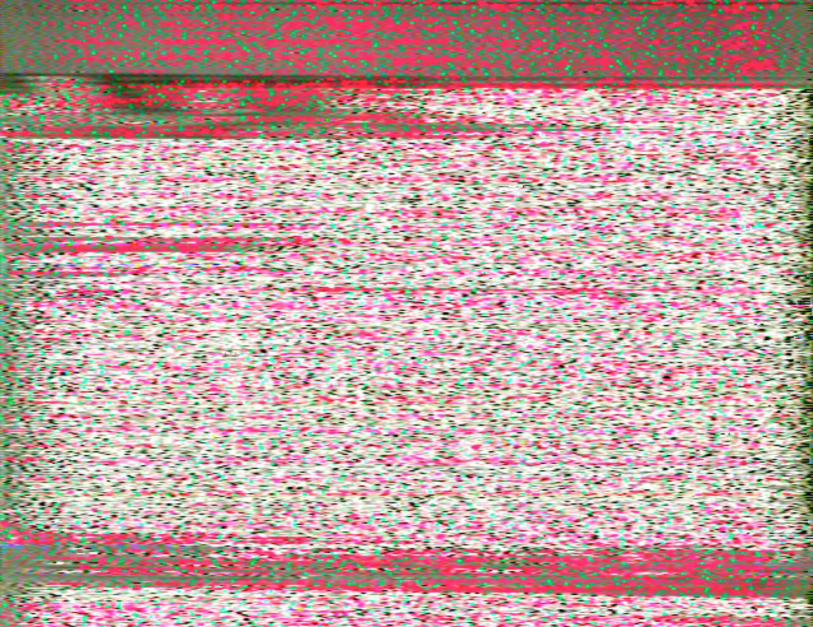
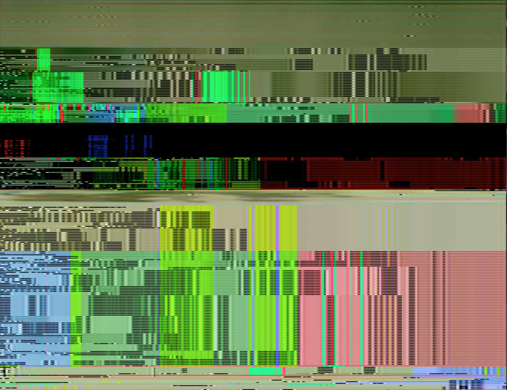
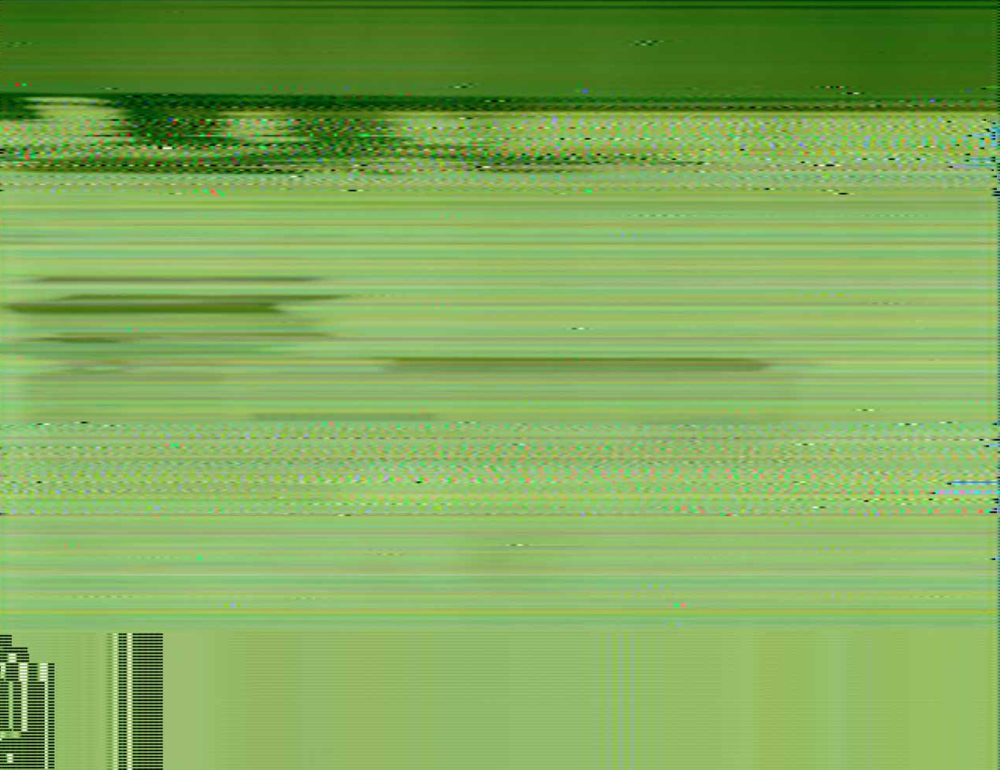
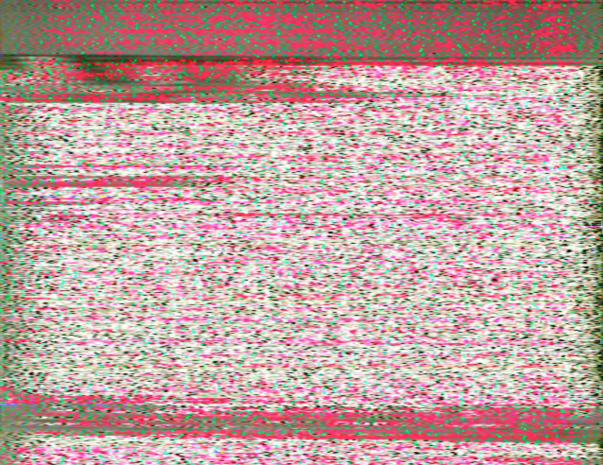
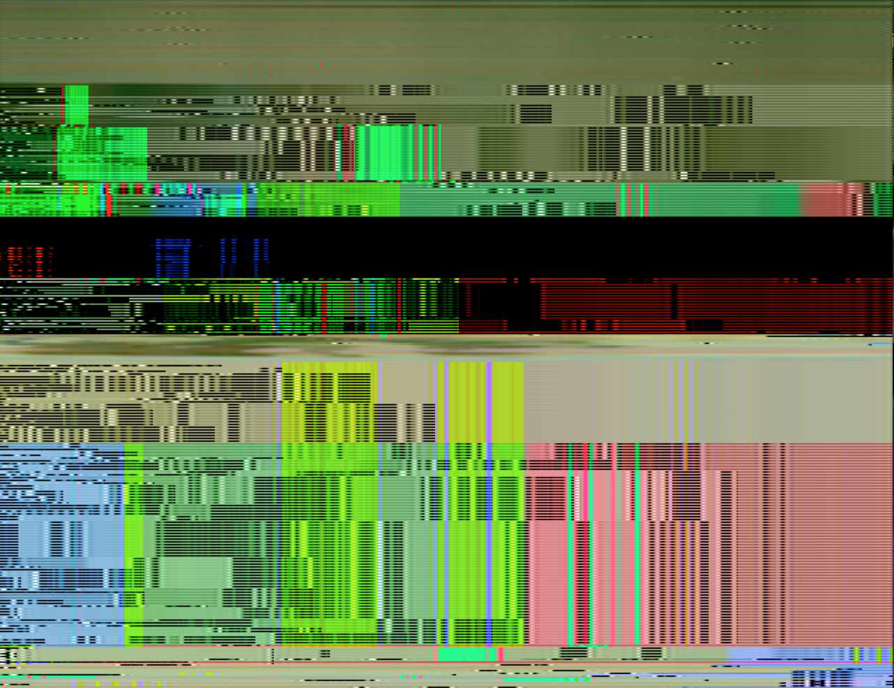
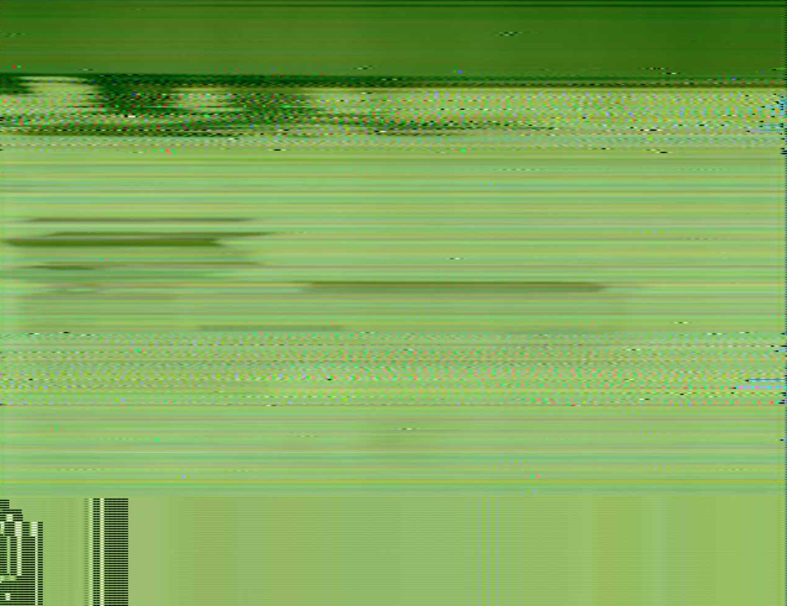
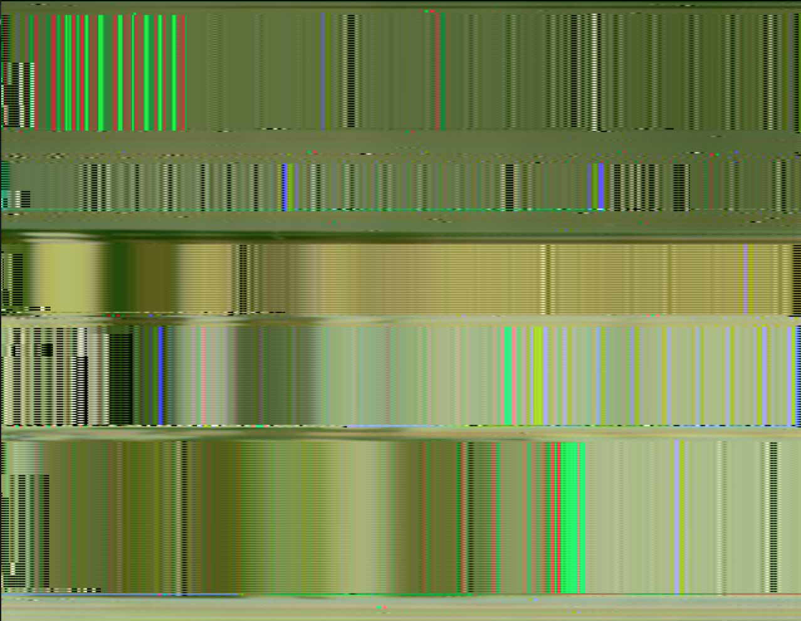
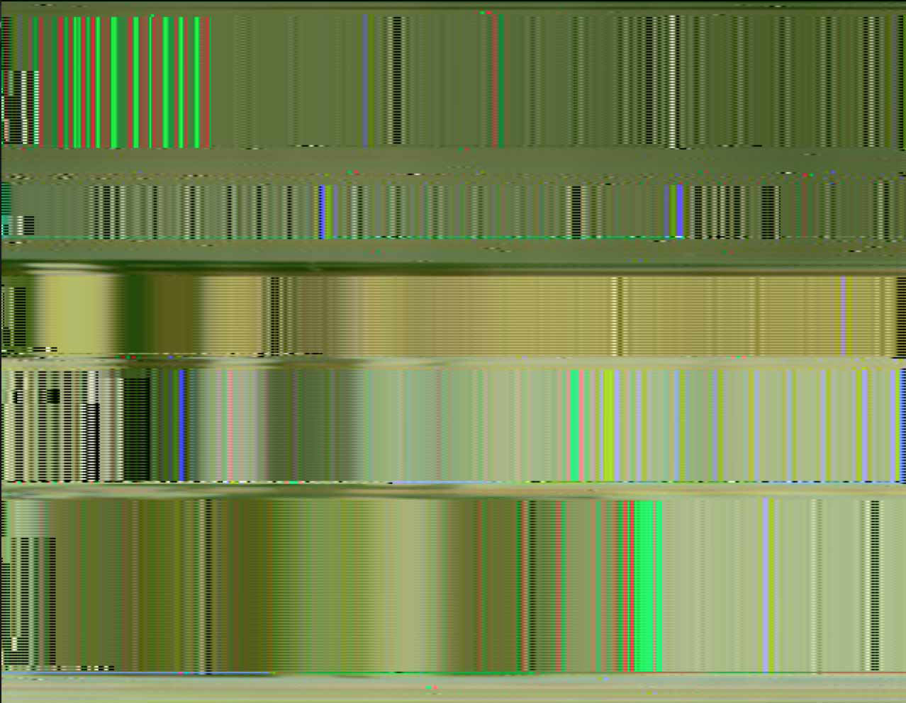

While making tests with sound and image, trying to make the audio signal less high pitched so
it could be confortably listened, some interesting results could be found while distorting
the sound while it is being received.
Glitch, noise, special deffects, or similar.
Here are some of them.
* images to be uploaded following
 







 


.